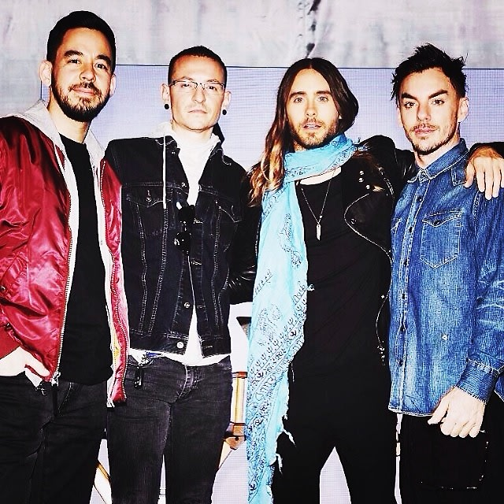

O The Hunting Party é o sexto álbum de estúdio do Linkin Park, lançado em 17 de junho de 2014, pela Warner
Bros. Records. O disco marca a volta do som pesado que marcou a banda no início dos anos 2000, após dois
álbuns focados em música eletrônica. É um álbum com muita influência do rock pesado dos anos 1990, tendo
forte presença de solos de guitarra e baterias potentes. Também foi o primeiro disco que teve grandes
colaborações envolvidas: All for Nothing coontou com a participação de Page Hamilton, do Helmet, Guilty All
The Same contou com a participação da lenda do hip-hop Rakim, Rebellion contou com a participação do
guitarrista do System Of A Down, Daron Malakian, e Drawbar contou com a participação do guitarrista do Rage
Against The Machine e do Audioslave, Tom Morello. Pela primeira vez desde o Meteora, Rick Rubin não
participou da produção do álbum, os produtores oficiais foram os membros da banda Brad Delson e Mike
Shinoda. Teve 5 singles: Guilty All The Same, Until It's Gone, Wastelands, Rebellion e Final Masquerade.
Estreou em 3° lugar na Billboard 200 e vendeu mais de 1 milhão de cópias no mundo inteiro, sendo o primeiro
a não estrear em 1° desde o Hybrid Theory.
Linkin Park em 2015 durante o The Hunting Party World Tour
performando Final Masquerade, Pequim
Mudança para um rumo mais intenso
Pela primeira vez desde o Meteora, Rick Rubin não foi o responsável pela produção do álbum. Para o The
Hunting Party, Brad Delson e Mike Shinoda foram os produtores. A produção começou oficialmente em maio de
2013, período que a banda também trabalhava no álbum de remix Recharged. Também teve um processo de
composição bem diferente dos anteriores, onde a banda tocava e gravava a música inteira de uma vez, ao invés
de gravar pequenos pedaços. No início o grupo estava escrevendo músicas mais voltadas ao pop rock, mas Mike
acabou voltando atrás e decidiu fazer algo mais pesado, com forte presença de solos de guitarra, algo pouco
presente em trabalhos anteriores da banda. Em uma entrevista ao MusicRadar, Brad falou sobre a abundância de
solos de guitarra e como eles chegaram ao The Hunting Party : "Há muitos solos de guitarra no álbum! E isso
é de alguém que foi citado logo no início dizendo que os odiava. Não que eu os odiasse como ouvinte; eu
simplesmente não queria tocar nenhum; eu evitava solos de guitarra. No início, eu sentia que as músicas que
estávamos fazendo esteticamente não os queriam. Este novo lote de músicas, para mim, sempre quer solos. Eu
sinto que cada música tem um." Rob Bourdon também se esforçou neste álbum, apresentando algumas de suas
performances de bateria mais impressionantes. Mike falou sobre o quanto Rob se esforçou em uma entrevista
para a Q Magazine: "Rob estava se matando. Ele tocou 10 horas por dia durante sete dias seguidos e estourou
as costas. Ele teve que consultar um quiroprático."
Com uma proposta mais crua e pesada, o The Hunting Party resgatou influências do punk, do hardcore e do
metal alternativo, refletindo uma resposta direta à sonoridade “suavizada” do rock contemporâneo. Faixas
como Guilty All the Same e Wastelands evidenciam essa abordagem, com riffs intensos, bateria explosiva e
vocais gritados que evocam a energia das primeiras fases da banda.
Linkin Park em 2014 durante o The Hunting Party World Tour, Castle
Donington
A força do desejo representada
A arte do The Hunting Party reflete o som agressivo presente no álbum. James Jean, artista conhecido pelo
seu estilo abstrato, foi o responsável pela capa, um arqueiro pronto para o ataque, enquanto Mike e Joe
ficaram com a direção criativa.
Originalmente, o nome do álbum seria Carnivores, mas a banda acreditava que este era um nome mais direto,
ligado a um estado de ser, como se o ataque fosse instintivo. Enquanto The Hunting Party demonstra uma ideia
de intenção, organização e propósito no desejo. Chester explicou: "Com Carnivores você não precisa explicar,
The Hunting Party você meio que precisa explicar."
Pelo segundo álbum seguido, Frank Maddocks não participou da criação da arte do disco. Ele só voltaria no
próximo álbum, One More Light.
Linkin Park em 2015 durante o The Hunting Party World Tour, Las
Vegas
De volta a raíz, mas fora do topo
O The Hunting Party foi o álbum que tentou voltar as origens do Linkin Park, e acabou recebendo críticas
majoritariamente positivas. Dave Simpson, do jornal inglês The Guardian, deu ao disco um parecer mediano.
Ele deu ao CD três de cinco estrelas, elogiando a banda por ter 'voltado ao seu som original', dizendo que
"o desejo de Shinoda de fazer um disco de punk rock e os elementos de electropop etéreo de Chester
Bennington não combinam bem sempre, mas a performance de Rob Bourdon na bateria faz com que a energia não
acabe". O site Metacritic deu uma nota 65 de 100 ao disco, caracterizando “boas críticas”, baseado em doze
resenhas. Kenneth Partridge, da revista Billboard, disse que “sem um bom guia, essa banda de rap-rock perde
o controle, disparando para todas as direções. Eles atacam as gravadoras, políticos, os fazedores de regras,
e qualquer um a vista, enquanto redescobrem a diversão selvagem das guitarras super barulhentas.”
O disco estreou no 3° lugar da Billboard 200, ficando atrás de Ultraviolence, da Lana Del Rey, e In the
Lonely
Hour, do Sam Smith, sendo o primeiro desde o Hybrid Theory a não estrear no 1° lugar. Nos Estados Unidos,
vendeu mais de 110 mil cópias em sua primeira semana. Apesar da tentativa de voltar as raízes, foi o álbum
de estúdio de menor sucesso do Linkin Park.
Linkin Park em 2014 durante o The Hunting Party World Tour
performando Until It's Gone, Castle Donington
Agressividade em turnê
Para o The Hunting Party, um álbum que marcou o retorno do Linkin Park às raízes mais pesadas do rock, com
forte influência do punk, hardcore e metal alternativo, se destacaram as seguintes turnês:
- Carnivores Tour, uma turnê conjunta com o 30 Seconds to Mars e participação especial do AFI como banda de
abertura. Aconteceu entre agosto e setembro de 2014, nos Estados Unidos, e foi nomeada com base no título
que quase foi escolhido para o álbum, Carnivores. Os shows dessa turnê combinavam grandes produções de
palco, telões, efeitos visuais e transições criativas no setlist. O Linkin Park apresentou vários dos novos
sons do The Hunting Party, mesclando-os com os hits dos álbuns antigos. A união com o 30 Seconds to Mars
gerou grande repercussão, com ambos os grupos atraindo públicos distintos e criando um espetáculo de peso no
cenário do rock moderno.
- The Hunting Party World Tour, turnê principal de divulgação do álbum, começou em maio de 2014 e seguiu até
julho
de 2015, com passagens pela Europa, América do Norte, Ásia e América do Sul. Os shows apresentavam cenários
com iluminação intensa e cortes visuais mais diretos, abandonando um pouco a sofisticação digital das turnês
anteriores. O setlist incluía faixas do The Hunting Party e os hits dos álbuns anteriores. A turnê também
passou pelo Brasil em maio de 2015, com apresentações em Belo Horizonte e Brasília.

Linkin Park e Thirty Seconds to Mars em Los Angeles durante a turnê
Carnivores
Tour, 2014